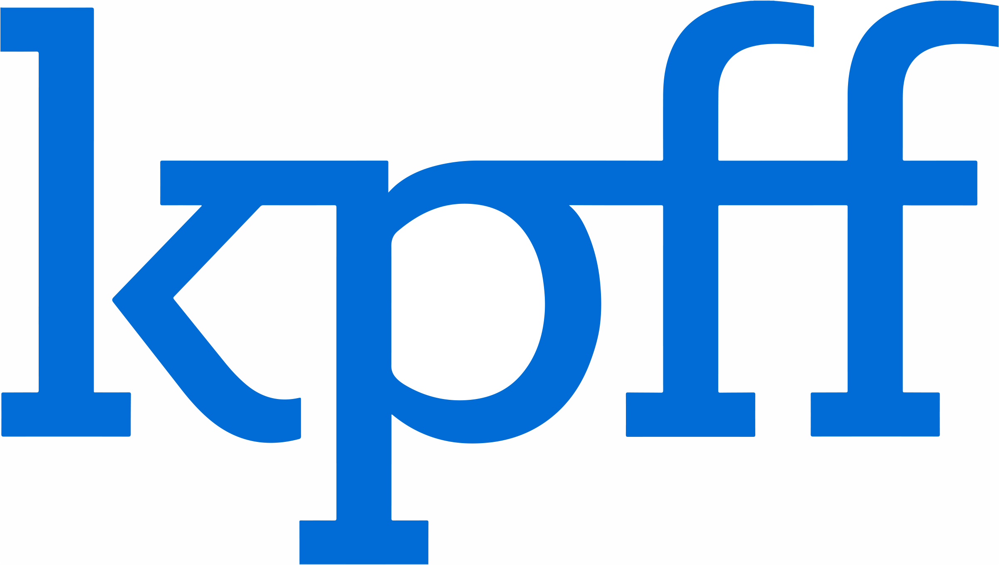

Professional experience
The experience behind my security focus.
Enterprise support, identity administration and infrastructure monitoring — a practical foundation for cybersecurity operations.
-
ENOC
IT Support Specialist & NOC Analyst
Investigate suspicious VPN sign-ins and MFA failures, remediate compromised accounts, and escalate security incidents with Cybersecurity and IAM teams. Monitor infrastructure across 800+ retail locations and administer Active Directory and Microsoft 365 access for 3,500+ users.
-
Expo 2020 Dubai
IT Operations & Support Engineer
Supported mission-critical event operations, enforced endpoint patch compliance through ManageEngine Desktop Central, and resolved Active Directory and VPN incidents. Worked with NOC and security teams on firewall access and infrastructure hardening.
-

KPFF Global
IT Coordinator
Administered Active Directory and Exchange Online access for 40+ users. Managed patching, antivirus, backups and software compliance, alongside firewalls, network devices and biometric access controls.
-
Infosys Ltd
System Engineer
Delivered L1/L2 infrastructure support for the Daimler Mercedes-Benz European Data Centre. Monitored services with SCOM and Nagios, and administered Active Directory, VMware and network infrastructure under ITIL incident and change-control processes.
Client engagement
Daimler Mercedes-Benz · European Data Centre